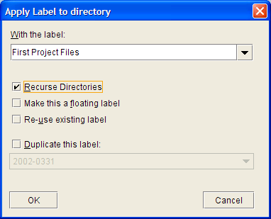

|
QVCS Enterprise Tutorial: Client Application BasicsRetrieving a Revision from a QVCS ArchiveLet's first familiarize ourselves with the most basic QVCS tool: the get operation. When you perform a get on a file, the client will retrieve the requested revision from the associated QVCS archive on the server and save that to your copy of the work file. You will use this operation most frequently when updating your copy of a project file which another member of your team has been working on. You can also use it to obtain a copy of an older revision stored in the archive. Since you just added your files to the project, all of them are up-to-date, so you'll have to delete one of them in order to see that Enterprise does anything. Using Explorer or Finder, delete one of the files in your project. Go back to the client application and hit F5 to refresh the display. The file status of your file should now read as "Missing," to show that Enterprise cannot find the associated work file. However, it still has a copy of the file in its archives. To retrieve this copy, select the missing file and click the Get File As it's assumed you'll most often use the get operation to update your work files, performing a get from the toolbar will not bring up a dialog. To fetch any older revision from an archive, select Get... from either the File menu or the context menu that appears when you right click on a file. The get operation is also one of a few that Enterprise can perform on a project-wide level. If you need to update a number of files, or want to retrieve a labeled set of files, you can right click on a project node or directory and select Get... from the context menu. This will bring up a dialog allowing you to fetch the desired group of revisions. Labeling a Set of RevisionsThe other major operation you can perform at the project-level is labeling. Labeling is a way of grouping together a set of files or revisions. For example, if you wanted to group all the revisions that made up release 2.1 of your product, you could apply a "2.1 release" label to these revisions. This is useful if you need to retrieve that same set of revisions at a later time, say if you need to create a patch build. You may have already started work on features for a later release, so you wouldn't want those changes to go into your patch build. Thus, you'd retrieve your labeled revision set, edit those files which needed fixing, and create your patch build based on the labeled revisions. Let's apply a label to the files you added to your project earlier. To use labels on a project-wide scale, right click on the project node or directory and select Apply Label... from the context menu. Doing so will bring up the following dialog:  Enabling the "Recurse Directories" checkbox will cause Enterprise to apply the label to any files it finds in any subdirectories of your project. When you enable the checkbox, you'll notice that the file pane display changes to show a recursed view. Enter an appropriate label string and click OK. Now if you select any of the files in your project, you'll see the label you just defined in the revision information pane. Note that this label is anchored to the 1.0 revision of each archive (since this is the revision currently in use for each archive). As you add other revisions to your archives, this label will remain with the 1.0 revision. If you wanted the label to move so that it would remain with the most recent revision in each archive, you would apply a floating label. This could be useful if you wanted to group together a set of files belonging to a release you were still developing. You can apply labels to individual files in a few different ways. The simplest is to select the file and use the Label File toolbar button. You can also elect to apply a label to a revision as you check it in. |
 toolbar icon. The client will fetch the latest revision (in this case the only revision, 1.0) from the server and copy it to the work file location. The file status will return to "Current." You can confirm that Enterprise retrieved the file using Explorer.
toolbar icon. The client will fetch the latest revision (in this case the only revision, 1.0) from the server and copy it to the work file location. The file status will return to "Current." You can confirm that Enterprise retrieved the file using Explorer.| For the source code, see https://github.com/jimv39/qvcsos |